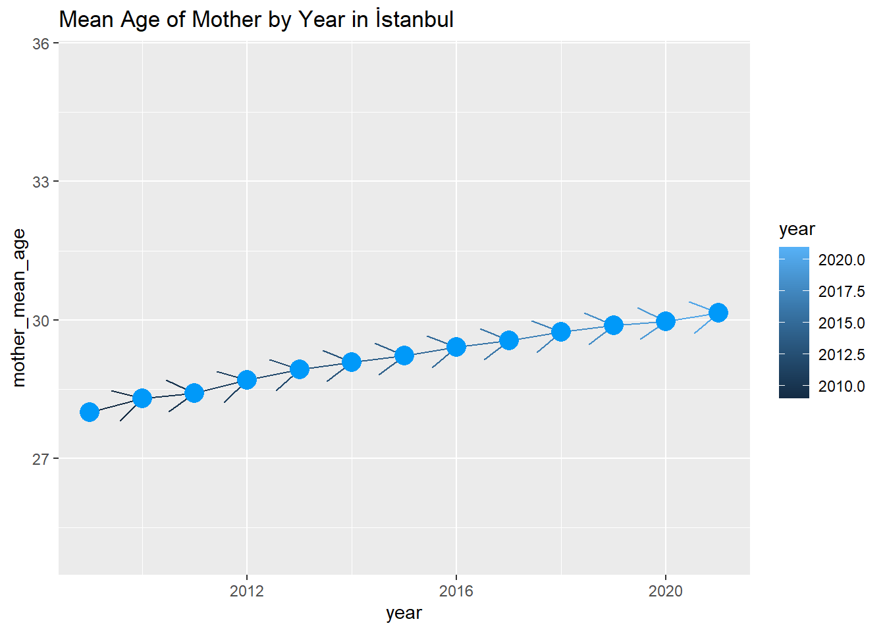
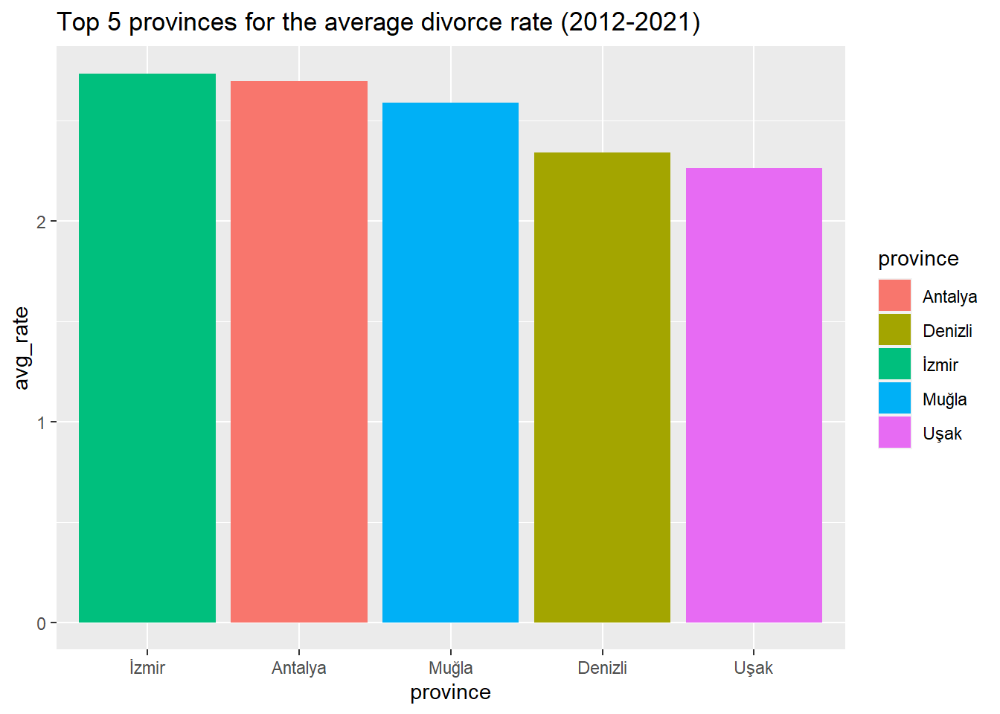

pti <- c("readxl","dplyr","tidyverse", "ggplot2", "lubridate", "tidyr", "stringi", "hrbrthemes", "viridis", "scales", "knitr")
pti <- pti[!(pti %in% installed.packages())]
if(length(pti)>0){
install.packages(pti)
}
library(readxl)
library(dplyr)
library(tidyverse)
library(ggplot2)
library(lubridate)
library(tidyr)
library(stringi)
library(hrbrthemes)
library(viridis)
library(scales)
library(knitr)3 TUIK EDA
Exploratory Data Analysis (EDA)
Key Takeaways
Men participate in the labour force two times more than women. Labour participation and employment rates are aligned. Economic crisis in 2019 had a negative impact on the labour market. COVID reinforced this effect by increasing the unemployment rate.
In Doğu Karadeniz, Güneydoğu Anadolu and Ortadoğu Anadolu, gender does not matter for the unemployment. Both men and women are unemployed. Men are more unemployed than women in Kuzeydoğu Anadolu whereas women unemployment rate is higher than that for men in other regions.
Being a housewife is the main reason for women that prevents them not being in the labour force. There is a stereotypical gender structure in Turkey that emphasizes on women are house-keepers, men are bread-winners. In addition, discouragement for both men and women overlapped in 2021. People are less motivated to seek for a job in Turkey over years.
Marital status affects the employment rate for women. Men dominance factor is dramatically higher in married women compared to never married or divorced women. It may have 2 different reasons: Married women are struggling with participating in work life; divorced or never married women need to work to obtain their own economic freedom.
Divorce rates between provinces are quite different in Turkey. While the top 5 highest divorce rates are in the Mediterranean or West Side, but the lowest 5 are at the East Side of Turkey. When we combine this info with regional unemployment rates, it’s being more dramatic for women.
Data Dictionary
Non-institutional population: Comprises all the population excluding the residents of dormitories of universities, orphanage, rest homes for elderly persons, special hospitals, prisons and military barracks etc.
Non-institutional working age population: Indicates the population 15 years old and over within the non-institutional civilian population.
Labour force: Labour force covers the working-age population that is willing to supply labour for the production of economic goods and services in the relevant reference period. In determining the labour force, activities that contribute to the production of goods and services within the United Nations System of National Accounts (SNA) production boundary are essential. Labour force comprises all employed and unemployed people.
Labour force participation rate: Indicates the ratio of the labour force to non-institutional working age population.
Employment: Comprises all the non-institutional working age population who are included in the persons “at work” and “not at work” described below.
Persons at work: Persons economically active during the reference period for at least one hour as a regular employee, casual employee, employer, self employed or unpaid family worker.
Persons not at work: Regular employee, casual employee, employer, self employed or unpaid family who have a job but away from job during the entire reference week for various reasons are considered as employed, if there is a tie with job according to the absence reason from job.
Persons who are not at work during the reference week due to official holidays or annual leave, sick leave, working hour arrangements, job related training or legal maternity/paternity leave are employed without the need for additional criteria.
Persons who are not at work to raise a child (parental leave, unpaid leave for childcare) are considered as employed only if they have an assurance of return to work within a period of less than 3 months or less and/or they continue to receive job related wage/salary during their absence.
Persons who are not at work because of off-season/low season are considered as employed only if they performing any task or duty during the off-season period.
Persons who are not at work due to the other reasons such as bad weather, there was no work, slowing down or stopping of work for technical or economic reasons, participating a training unrelated to job are considered as employed only if they have an assurance of return to work within a period of 3 months or less.
The members of producer cooperatives and apprentices or trainees who are working to gain any kind of benefit (income in cash or in kind, social security, traveling cost, pocket money etc.) are considered to be employed.
Employment Rate: It is the ratio of employment to the non-institutional working age population.
Unemployment rate: It is the ratio of unemployed persons to the labour force.
Reference :
https://data.tuik.gov.tr/Search/Search?text=employment%20rate
Analysis
First of all, libraries are installed.
Data files are read in Excel.
labour_force_status_by_reg <- readRDS("docs/tuik/Labour_force_status_by_reg.rds")
employed_rate_by_marital_status <- readRDS("docs/tuik/Employed_rate_by_marital_status.rds")
female<-employed_rate_by_marital_status%>%filter(gender=="Female")
male<-employed_rate_by_marital_status%>%filter(gender=="Male")
reasons_of_not_being_in_lab_for <- readRDS("docs/tuik/Reasons_of_not_being_in_lab_for.rds")
crude_divorce_rate_by_provinces <- readRDS("docs/tuik/Crude_divorce_rate_by_provinces.rds")
mean_age_of_mother_by_statistic <- readRDS("docs/tuik/Mean_age_of_mother_by_Statistic.rds")Descriptive statistics are given for high-level understanding of each data table.
summary(labour_force_status_by_reg) year region gender
Min. :2014 Length:208 Length:208
1st Qu.:2016 Class :character Class :character
Median :2018 Mode :character Mode :character
Mean :2018
3rd Qu.:2019
Max. :2021
labour_force_participation_rate unemployment_rate employment_rate
Min. :0.1620 Min. :0.0290 Min. :0.1420
1st Qu.:0.3280 1st Qu.:0.0800 1st Qu.:0.2800
Median :0.5375 Median :0.1095 Median :0.4500
Mean :0.5142 Mean :0.1132 Mean :0.4594
3rd Qu.:0.7060 3rd Qu.:0.1472 3rd Qu.:0.6452
Max. :0.7740 Max. :0.2310 Max. :0.6920 summary(mean_age_of_mother_by_statistic) region district province_id province
Length:1053 Length:1053 Length:1053 Length:1053
Class :character Class :character Class :character Class :character
Mode :character Mode :character Mode :character Mode :character
year mother_mean_age
Min. :2009 Min. :25.77
1st Qu.:2012 1st Qu.:27.58
Median :2015 Median :28.23
Mean :2015 Mean :28.20
3rd Qu.:2018 3rd Qu.:28.82
Max. :2021 Max. :30.52 summary(reasons_of_not_being_in_lab_for) year gender reason pop_not_in_lab_force
Min. :2014 Length:144 Length:144 Min. : 0.0
1st Qu.:2016 Class :character Class :character 1st Qu.: 386.8
Median :2018 Mode :character Mode :character Median : 1319.5
Mean :2018 Mean : 3233.4
3rd Qu.:2019 3rd Qu.: 2686.8
Max. :2021 Max. :21855.0 summary(employed_rate_by_marital_status) year gender marital_status employed_rate
Min. :2014 Length:64 Length:64 Min. :0.0650
1st Qu.:2016 Class :character Class :character 1st Qu.:0.2525
Median :2018 Mode :character Mode :character Median :0.3525
Mean :2018 Mean :0.3897
3rd Qu.:2019 3rd Qu.:0.5593
Max. :2021 Max. :0.7279 summary(crude_divorce_rate_by_provinces) province year crude_divorce_rate
Length:810 Min. :2012 Min. :0.1129
Class :character 1st Qu.:2014 1st Qu.:0.9894
Mode :character Median :2016 Median :1.4774
Mean :2016 Mean :1.4206
3rd Qu.:2019 3rd Qu.:1.8818
Max. :2021 Max. :3.0363 After this section, data visualizations are made to have a better understanding about data.
Labour Force Rates by Gender
This graph shows the labour force participation, employment and unemployment rates by gender over years (2014-2021). Women unemployment rate is higher than men’s unemployment rate whereas other metrics for women are quite low compared to those for men. Until 2019, the unemployment rate slightly changes. However, it starts to increase after 2019 due to the economic crisis in Turkey. COVID made the unemployment rate for men and women almost equal. Labour participation and employment rates for men are two times more than those for women. In 2020, labour participation and employment rates are lower compared to other years due to COVID.
labour_force_status_by_reg %>%
filter(region == "Total") %>%
select(year, gender, labour_force_participation_rate, employment_rate, unemployment_rate) %>%
pivot_longer(cols = -c(gender, year), values_to = "value", names_to = "variable") %>%
ggplot(aes(x = year, y = value, fill = reorder(variable, value))) +
geom_bar(position="dodge", stat="identity") +
facet_grid(. ~ gender) +
scale_x_continuous(breaks = c(min(labour_force_status_by_reg$year):max(labour_force_status_by_reg$year))) +
theme(axis.text.x = element_text(angle=90,vjust=1,hjust=1), legend.position="top", legend.title=element_blank()) +
coord_flip() +
labs(title = "Labour Force Rates by Gender")
Labour Force Participation Rate by Region
This chart displays the distribution of labour force participation by gender over years (2014-2021). Men participate in the labour force more than women independent of region. In addition, the labour force participation rate slightly decreased for all regions in 2010 due to COVID. Regional labour participation rate patterns are quite the same except for Doğu Karadeniz and Güneydoğu Anadolu. Labour force rates for men and women are close in Doğu Karadeniz since women labour force participation rate is higher than other regions. On the contrary, there is a huge gap between men and women in Güneydoğu Anadolu.
labour_force_status_by_reg %>%
filter(region != "Total") %>%
ggplot() +
geom_line(aes(x = year, y = labour_force_participation_rate, color = gender)) +
facet_wrap( ~ region) +
scale_x_continuous(breaks = c(min(labour_force_status_by_reg$year):max(labour_force_status_by_reg$year))) +
theme(axis.text.x = element_text(angle=90,vjust=1,hjust=1)) +
labs(title = "Labour Force Participation Rate by Region")Employment Rate by Region
This graph illustrates trends in employment rate between 2014 and 2021. It has a similar pattern with labour force participation rate.
labour_force_status_by_reg %>%
filter(region != "Total") %>%
ggplot() +
geom_line(aes(x = year, y = employment_rate, color = gender)) +
facet_wrap( ~ region) +
scale_x_continuous(breaks = c(min(labour_force_status_by_reg$year):max(labour_force_status_by_reg$year))) +
theme(axis.text.x = element_text(angle=90,vjust=1,hjust=1)) +
labs(title = "Employment Rate by Region")
Unemployment Rate by Region
This graph shows trends in unemployment rate between 2014 and 2021. Unemployment rate for men is higher than that for women in Kuzeydoğu Anadolu. Lines overlap in Doğu Karadeniz, Güneydoğu Anadolu and Ortadoğu Anadolu. There is no distinction between men and women. They are both unemployed. Unemployment rate is low in Batı Karadeniz compared to other regions. Unemployment rate peaked in 2019 generally due to the economic crisis in Turkey.
labour_force_status_by_reg %>%
filter(region != "Total") %>%
ggplot() +
geom_line(aes(x = year, y = unemployment_rate, color = gender)) +
facet_wrap( ~ region) +
scale_x_continuous(breaks = c(min(labour_force_status_by_reg$year):max(labour_force_status_by_reg$year))) +
theme(axis.text.x = element_text(angle=90,vjust=1,hjust=1)) +
labs(title = "Unemployment Rate by Region")This boxplot shows us the unemployment rate distribution over years for each region in gender breakdown.
First of all, we may focus on the difference between females and males. Median value of the unemployment rate is higher for females than males in every region.
The second objective is that the Marmara region and the west side of Turkey have a lower unemployment rate than other regions.
The third objective is about stabilization of the unemployment rate. We can easily see that the Marmara region and the west side of Turkey has more consistent unemployment rates. Especially box plot ranges are maximum in Middle East of Anatolian region, It means that there is no stability over year in this region.
labour_force_status_by_reg %>%
filter(region != "Total") %>%
ggplot(aes(y=unemployment_rate, group = gender)) +
geom_boxplot(fill="steelblue") +
facet_grid(gender ~ region) +
theme(axis.text.x = element_text(angle=90,vjust=1,hjust=1)) +
theme(strip.text.x = element_text(size = 3)) +
labs(title = "Unemployment Distribution by Region")
Reasons of not Being in Labour Force by Gender
This chart shows trends for not being in the labour force by reasons. Housewife is the main reason that prevents women participation in the labour force. It is not a choice as the name implies. Since women have to take care of housework, they are unemployed whereas men keep working after having children. Education /Training lines overlap. Both men and women care about Education /Training. “Not seeking for a job, available to start - Discouraged” lines are merged in 2021. Due to the economic crisis in Turkey, people are not motivated to find a job. Being disabled, old, ill etc. puts women back in the labour force.
reasons_of_not_being_in_lab_for %>%
#filter(gender == "Female") %>%
group_by(reason,year, gender) %>%
summarise(sum_of_not_in_lab_force = sum(pop_not_in_lab_force), .groups = "drop") %>%
pivot_wider(values_from = sum_of_not_in_lab_force, names_from = gender) %>%
transmute(year = year,reason = reason, Female_ = Female/ (Female+Male), Male_ = 1 - Female/ (Female+Male)) %>%
pivot_longer(cols= ends_with("ale_"),values_to = "ratio_not_in_labor_force", names_to = "gender") %>%
ggplot(aes(x = year, y = ratio_not_in_labor_force, color = gender)) +
geom_line() +
facet_wrap( ~ reason) +
theme(strip.text.x = element_text(size = 3)) +
labs(title = "Reasons of not being in labour force by Gender")
Employment Ratio
One of our main aims is understanding the proportion of women in labor in general aspects. We calculated a new metric called employment ratio to detect men vs women participation. Employment Ratio explains the ratio of Men Employment Rate to Women Employment Rate. It’s a KPI for understanding men’s dominance over women in working life. The graph shows us there is a major difference between married and divorced women in work life. If the marital status is married for both genders, men’s dominance factor is sharply increasing according to never married or divorced people. It may explain 2 different results in terms of 2 different points of view: Married women are struggling with participating work life; divorced or never married women needs to work to obtain their own economic freedom.
diff<-female%>%mutate(ratio=male$employed_rate/female$employed_rate) %>%select(-gender)
ggplot(diff, aes(x = year, y = ratio, color = marital_status)) + geom_line() +
scale_x_continuous(breaks = c(min(female$year):max(female$year))) +
labs(title = "Employment Ratio")
Mean Age of Mother by Year
When we inspect the mean age of the mothers in Istanbul province which is the biggest city of Turkey and represent almost 25% of the country’s population, it’s clear that mean age has increased from 28 to 30 in 12 years. There is no spectacular change in any year transition but there is 2 years absolute change in 12 years total. It means that women tend to be mothers in more old ages.
mean_age_of_mother_by_statistic %>%
filter(province == "İstanbul") %>%
ggplot(aes(x = year, y = mother_mean_age)) +
geom_line() +
coord_cartesian(xlim = c(2009,2021),ylim = c(25,max(mean_age_of_mother_by_statistic$mother_mean_age + 5))) +
geom_line(arrow = arrow(), aes(color = year)) +
geom_point(color = "#0099f9", size = 5) +
labs(title = "Mean Age of Mother by Year in İstanbul")
We can observe the increasing trend on the mean age of mothers year by year in all regions. The histogram plot’s range and distribution stay the same but their minimum and maximum values are rising by year. In particular, the mean motherhood age change is more evident on 2012-2013 transition in spite of changes that are not spectacular between 2009 and 2012. The other major changes are after 2019.
mean_age_of_mother_by_statistic %>%
ggplot(aes(x = mother_mean_age, fill = year)) +
geom_histogram(bins = 10) +
facet_grid(year~.) +
labs(title = "Mean Age of Mother by Year")five_metropolis <- c("İstanbul","Ankara","İzmir","Bursa","Adana")
mean_age_of_mother_by_statistic %>%
filter(province %in% five_metropolis, year %in% c(2019,2020,2021)) %>%
ggplot(aes(x = year, y= mother_mean_age)) +
geom_bar(stat = "identity", position = position_dodge(), alpha = 0.75) +
facet_grid(. ~province) +
ylim(0,35) +
geom_text(aes(label = sprintf("%.2f",mother_mean_age)), fontface = "bold", vjust = 1.5, colour = "white", size = 3) +
labs(x = "\n Years", y = "Mean Mother Age\n", title = "\n Mean Mother Age by Year and Metropolis \n") +
theme(plot.title = element_text(hjust = 0.5),
axis.title.x = element_text(face="bold", colour="darkgreen", size = 12),
axis.title.y = element_text(face="bold", colour="darkgreen", size = 12),
legend.title = element_text(face="bold", size = 10),
strip.background = element_rect(fill="lightblue", colour="black", size=1),
strip.text = element_text(face="bold", size=rel(1.2))) +
labs(title = "Mean Age of Mother by Metropolis in the last 3 years")
Minimum Average Age of Mother by Region
This is the table of minimum average ages of regions by year. This table tells us that Istanbul has the highest average motherhood age when compared to other regions.
mean_age_of_mother_by_statistic %>%
select(region,year ,mother_mean_age) %>%
group_by(region,year) %>%
summarise(min_mean_mother_age = min(mother_mean_age), .groups = "drop") %>%
pivot_wider(values_from = min_mean_mother_age, names_from = year)# A tibble: 12 × 14
region `2009` `2010` `2011` `2012` `2013` `2014` `2015` `2016` `2017` `2018`
<chr> <dbl> <dbl> <dbl> <dbl> <dbl> <dbl> <dbl> <dbl> <dbl> <dbl>
1 "TR1 İ… 28.0 28.3 28.4 28.7 28.9 29.1 29.2 29.4 29.6 29.7
2 "TR2 B… 27.0 27.0 27.2 27.5 27.7 27.9 27.9 28.1 28.2 28.6
3 "TR3 E… 25.8 26.1 26.3 26.5 26.9 27.0 27.1 27.1 27.3 27.5
4 "TR4 D… 27.1 27.6 27.8 28.0 28.0 28.5 28.3 28.5 28.8 28.9
5 "TR5 B… 26.8 27.0 27.2 27.4 27.7 27.8 28.0 28.1 28.2 28.3
6 "TR6 A… 26.6 26.8 27.0 27.3 27.5 27.7 27.8 27.9 28.0 28.1
7 "TR7 O… 25.8 26.1 26.2 26.7 27.0 27.1 27.2 27.5 27.4 27.6
8 "TR8 B… 26.2 26.4 26.8 27.0 27.4 27.6 27.8 27.9 28.0 27.9
9 "TR9 D… 26.6 26.8 27.1 27.5 27.7 27.9 28.1 28.3 28.4 28.6
10 "TRA K… 26.2 26.4 26.3 26.5 26.7 26.7 26.8 26.8 26.7 26.8
11 "TRB O… 26.6 26.7 26.7 26.7 27.0 27.0 27.0 26.9 27.0 27.1
12 "TRC G… 27.0 26.8 26.8 27.1 27.3 27.2 27.4 27.2 27.1 27.1
# … with 3 more variables: `2019` <dbl>, `2020` <dbl>, `2021` <dbl>Crude Divorce Rate by Province
When we checked the highest and lowest divorce rates by regions. We observed that the West Side and Mediterranean coast cities are the top 5 cities in divorce rate while the top 5 cities with lowest divorce rate are on the East Side of Turkey. If we combine this information with the unemployment rate, it becomes a more dramatic state.
plot_data1<-crude_divorce_rate_by_provinces %>%
group_by(province) %>%
summarise(avg_rate = mean(crude_divorce_rate))%>%
arrange(desc(avg_rate)) %>%
top_n( 5)
ggplot(plot_data1,aes(x=reorder(province, -avg_rate), y=avg_rate, fill= province)) +
geom_bar(stat = "identity") +
labs(title = "Top 5 provinces for the average divorce rate (2012-2021)") +
xlab("province")
plot_data2<-crude_divorce_rate_by_provinces %>%
group_by(province) %>%
summarise(avg_rate = mean(crude_divorce_rate))%>%
arrange(avg_rate) %>%
slice(1:5)
ggplot(plot_data2,aes(x=reorder(province, -avg_rate), y=avg_rate, fill=province)) +
geom_bar(stat = "identity") +
labs(title = "Top 5 provinces for the lowest average divorce rate (2012-2021)") +
xlab("province")